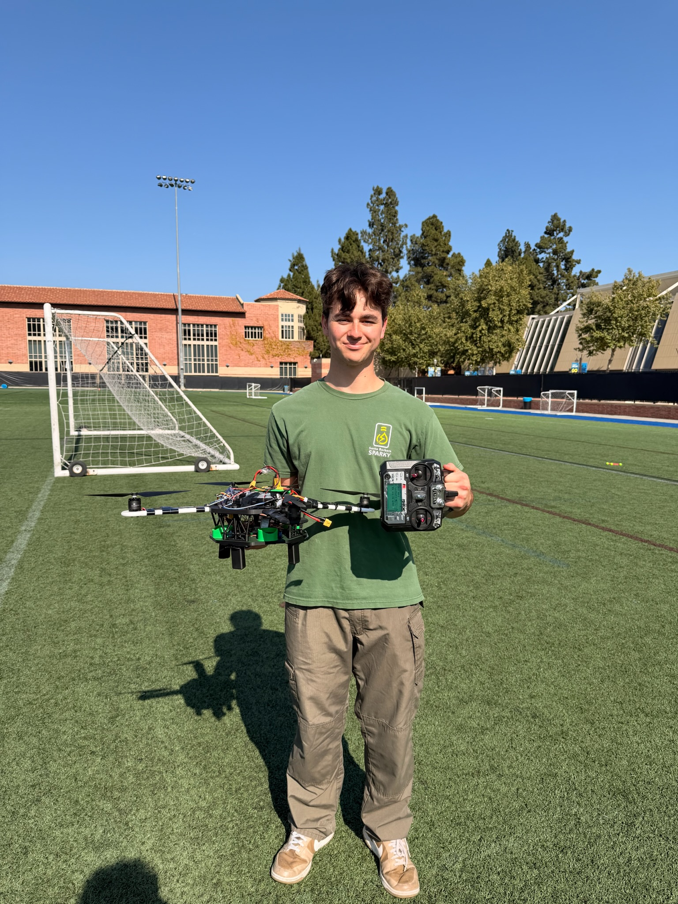
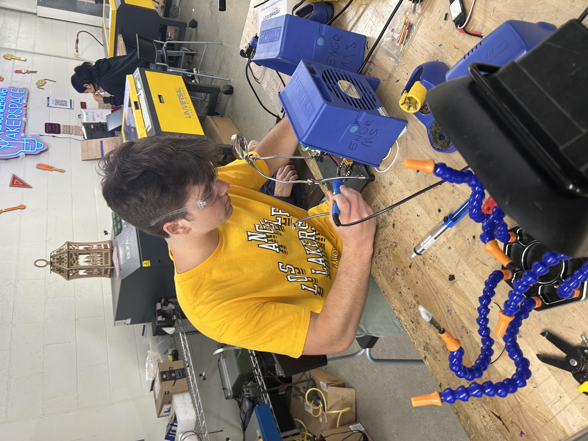

WHO I AM
I grew up in the Santa Ynez Valley, California, a small community nestled between sunny Santa Barbara beaches and strategic Vandenberg Space Force Base. Growing up, rumbling vibrations and a thunderous BOOM didn't strike fear, rather wonder, as it my sign to rush out to the street to catch a glimpse of a rocket launch.
Now, I'm a rising senior Mechanical Engineering student at UCLA also pursuing a Technical Breadth in Technology Management, with three summers of industry internship experience between DZYNE Technologies and Excelta Corporation. At school, I've built extensive technical and leadership experience through organizations like ASME Flagship Combat Robotics.
As a kid, I saw some of the incredible things that engineers could do. I aspire to have that kind of tangible impact on projects. That's what it's all about for me, whether it's protecting our warfighters, building a consumer product used by millions, or working on technology that inspires the next generation of engineers.



